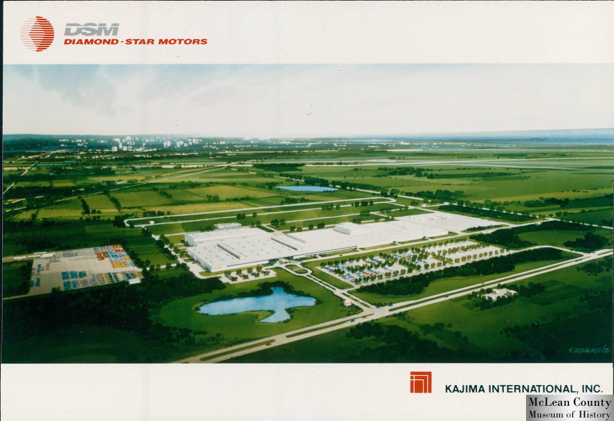
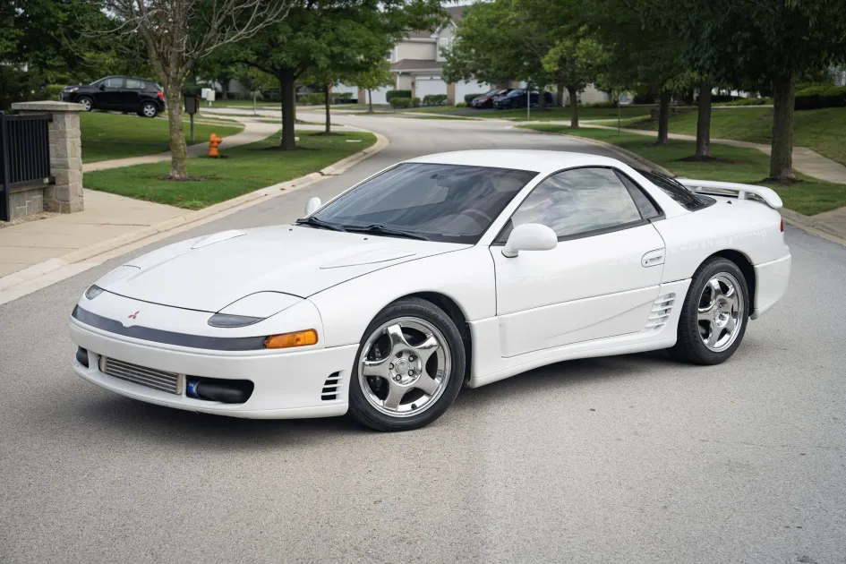
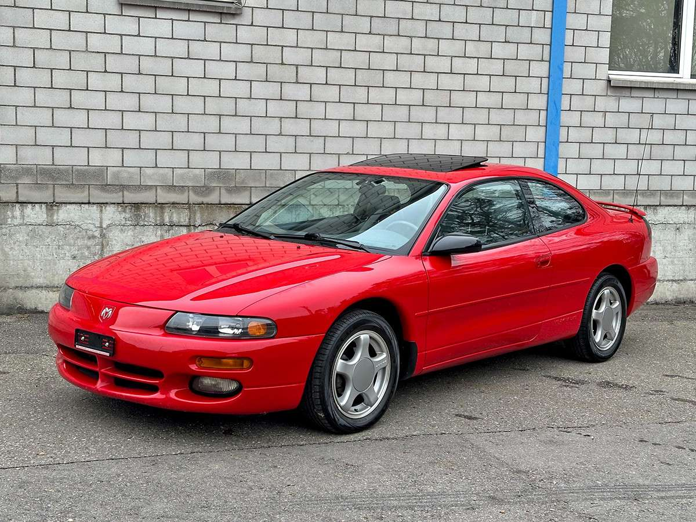
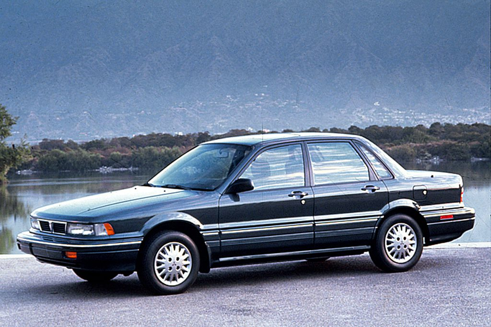
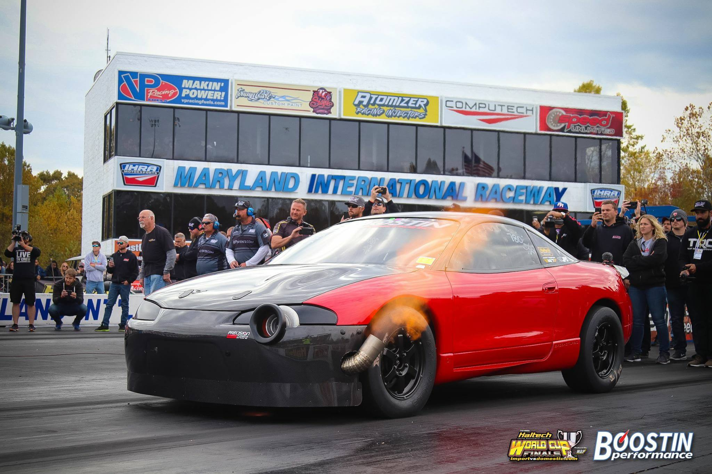
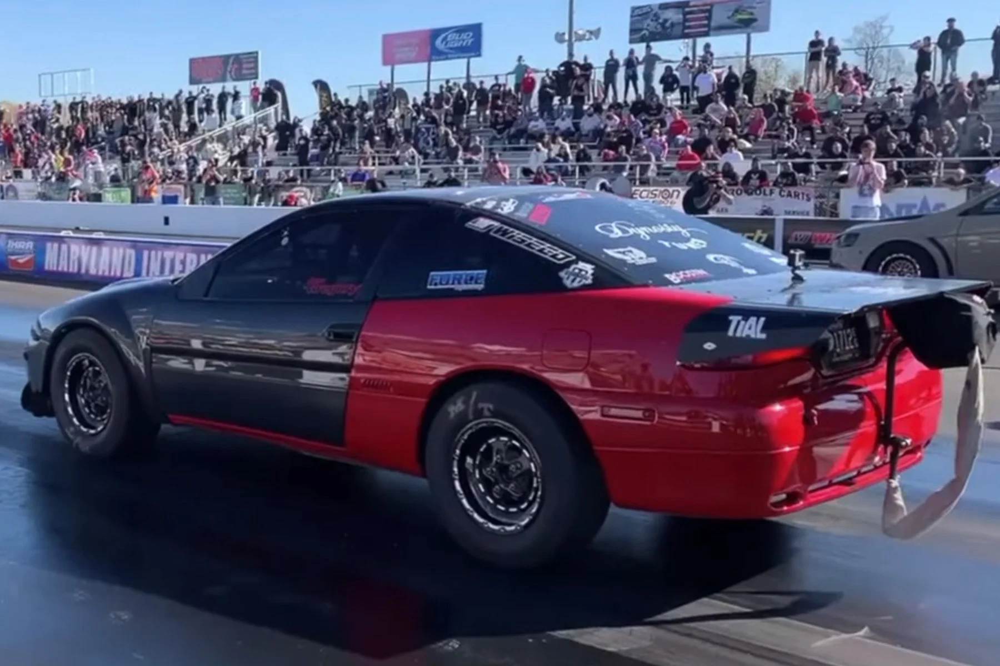

THE PARTNERSHIP
How two automotive giants joined forces to create a legend

THE PRECURSORS
The legendary vehicles that paved the way for Diamond Star Motors
THE CONTEMPORARIES
Notable models that shared the spotlight with Diamond Star Motors
The Chrysler-Mitsubishi Performance Era
While the DSM vehicles became icons in their own right, they were part of a broader performance renaissance for both Chrysler and Mitsubishi in the 1990s. These contemporary models shared showroom space and technological advancements with the Eclipse, Talon, and Laser, creating a diverse lineup of performance-oriented vehicles.




These contemporary models demonstrate how the Chrysler-Mitsubishi partnership extended beyond just the core DSM vehicles. From the technological tour de force of the 3000GT/Stealth to the practical performance of the Galant, these cars helped define an era when Japanese engineering and American design sensibilities created compelling vehicles for enthusiasts.
CONTINUE TO TIMELINETHE VEHICLES
The iconic models that defined the Diamond Star Motors legacy
The DSM Triplets
The three vehicles produced at the Diamond Star Motors plant in Normal, Illinois shared the same platform, drivetrain options, and basic engineering, but each carried unique styling and brand identities. Known collectively as "the DSM triplets" among enthusiasts, these sports coupes offered impressive performance at an accessible price point.
Technical Specifications
Powertrain
The top-tier models featured the legendary 4G63 turbocharged 2.0L inline-four engine, producing 195 horsepower and 203 lb-ft of torque. This robust engine became famous for its tuning potential, with enthusiasts routinely extracting 300+ horsepower with basic modifications.
All-Wheel Drive
The AWD system on GSX, TSi AWD, and RS Turbo AWD models featured a viscous coupling center differential that sent 50% of power to the rear wheels in normal conditions, with the ability to transfer more power to either axle as needed for optimal traction in various conditions.
Performance
The turbocharged AWD variants could accelerate from 0-60 mph in approximately 6.4 seconds - impressive performance for early 1990s sports cars in their price range. Their combination of speed, handling, and all-weather capability made them formidable competitors against more expensive sports cars.
THE FACTORY
The heart of Diamond Star Motors production
Advanced Facility
The Normal, Illinois plant spanned an impressive 1.9 million square feet and represented a $650 million investment. This state-of-the-art facility was designed to produce up to 240,000 vehicles annually, showcasing the commitment both Chrysler and Mitsubishi had to the joint venture.
Automation Pioneer
The factory featured cutting-edge automation with approximately 1,000 robots working alongside human workers. This blend of high technology and skilled labor created a manufacturing powerhouse that set new standards for efficiency and quality.
Workforce Excellence
At its peak, the plant employed nearly 3,000 workers who formed the United Auto Workers Local 2488 in 1989. The combination of a skilled workforce and innovative manufacturing processes contributed to the quality and performance that made DSM vehicles so beloved.
Production Versatility
The factory demonstrated remarkable flexibility, producing multiple models on the same production line. Beyond the initial DSM triplets, the facility would go on to manufacture other vehicles including the Mitsubishi Galant and later the Mitsubishi Outlander Sport.
THE LEGACY
The enduring impact and technological heritage of Diamond Star Motors
An Enthusiast Phenomenon
Though the Diamond Star Motors partnership was relatively short-lived in automotive terms, its impact on car culture has been profound and enduring. The term "DSM" evolved beyond the company name to become shorthand among automotive enthusiasts for the Eclipse, Talon, and Laser models.
These vehicles developed a devoted following for their tunability and performance potential. The 4G63 turbocharged engine found in top-trim models proved capable of handling significantly more power than stock, making DSM vehicles favorites in the aftermarket tuning community.
Racing success further cemented the DSM legacy, with modified Eclipses, Talons, and Lasers competing successfully in various motorsport disciplines from drag racing to hill climbs. In 2004 and 2005, Greg Collier won the NASA Super Unlimited class national title in a Plymouth Laser RS Turbo, beating purpose-built Ferrari and Porsche race cars.
Today, well-preserved examples of first-generation DSM vehicles are increasingly sought after by collectors, recognizing their significance in automotive history as pioneers of accessible performance and emblems of Japanese-American automotive collaboration.


Origins & Formation
Diamond Star Motors began in 1970 when Chrysler purchased a 15% stake in Mitsubishi Motors as part of MMC's strategy to expand through foreign partnerships. The name "Diamond Star Motors" derived from their respective logos: Mitsubishi's three diamonds and Chrysler's pentastar.
By 1982, Chrysler was importing about 110,000 Mitsubishi vehicles annually. However, voluntary import quotas limited the number of Japanese cars entering the US market. To circumvent these limitations, the two companies officially formed Diamond Star Motors in October 1985.
Manufacturing Excellence
The companies broke ground on a 1.9 million square foot production facility in Normal, Illinois in April 1986. The plant was completed in March 1988 with an annual capacity of 240,000 vehicles. Initially, Diamond Star Motors was a 50-50 joint venture between Chrysler and Mitsubishi.
The plant employed cutting-edge manufacturing techniques and automation, with approximately 1,000 robots working alongside human workers, making it one of the most advanced automotive plants in North America at the time.
Vehicle Evolution
The first models produced at the DSM facility included the Mitsubishi Eclipse, Plymouth Laser, and Eagle Talon - all 2+2 sports cars built on a newly co-designed platform. These three vehicles were mechanically identical with only cosmetic differences between them.
Later production included the Mitsubishi Mirage/Dodge/Plymouth Colt/Eagle Summit sedans, the Mitsubishi Galant, the Dodge Avenger Coupe/Chrysler Sebring Coupe, and the Dodge Stratus Coupe, showing the versatility of the joint venture's design capabilities.
End of an Era
In 1991, Mitsubishi purchased Chrysler's stake in the joint venture. From that point forward, the manufacture of Chrysler vehicles was on a contractual basis only. Chrysler completely sold its equity stake to Mitsubishi in 1993, and on July 1, 1995, Diamond Star Motors was renamed Mitsubishi Motors Manufacturing America (MMMA).
Production at the plant ended on November 30, 2015. The facility was ultimately sold to electric vehicle startup Rivian in 2017 for $16 million, marking a transition from traditional performance cars to the future of electric mobility.
4G63T Technical Specifications
Global Impact & Continuing Influence
Diamond Star Motors created a blueprint for international automotive collaboration that continues to influence the industry today. Despite the dissolution of the joint venture, the legacy of DSM extends far beyond its original Illinois factory.
Motorsport Heritage
The 4G63-powered vehicles triumphed in rally racing, circuit racing, and particularly in grassroots motorsports where privateers could compete against exotic machinery on relatively modest budgets. The Lancer Evolution became a rally legend, winning four consecutive WRC drivers' titles from 1996-1999.
Tuning Culture
DSM vehicles helped establish the import performance scene in North America, creating a community that continues to thrive today. The engines' ability to handle significant power increases while maintaining reliability created a devoted following among tuners who pushed the boundaries of four-cylinder performance.
Continuing Production
The 4G63 engine continues to be produced in China through Shenyang Aerospace Mitsubishi Motors Engine Manufacturing (SAME), powering vehicles like the Zotye T600 and Soueast DX7. This remarkable 40+ year production run makes it one of the longest-lived performance engines in automotive history.
Popular Culture
The DSM vehicles gained even wider recognition when the Mitsubishi Eclipse was featured prominently in "The Fast and the Furious" film franchise, cementing its place in pop culture and introducing a new generation to these performance cars and their tremendous potential.
"The performance legacy of Diamond Star Motors and the 4G63 engine represents one of the most influential chapters in modern automotive history, democratizing performance and creating a blueprint for international collaboration that continues to this day."
THE COMMUNITY
Voices from DSM enthusiasts around the world
"My 1990 Eclipse GSX was my first real performance car. Almost 30 years later, I'm still modifying and enjoying it. The DSM community is like a family—we share a passion for these special cars that were ahead of their time."
"The Eagle Talon TSi AWD was the perfect blend of Japanese engineering and American style. I've owned mine for 25 years and still get people asking about it at car shows. These vehicles created a dedicated community unlike any other."
"I restored my dad's 1991 Plymouth Laser RS Turbo as a tribute to him. The DSM online forums were incredibly helpful—strangers became friends as they helped me source rare parts and troubleshoot issues. That's the power of the DSM community."
"What makes DSMs special is how they democratized performance. For a reasonable price, you got turbocharged power, available AWD, and striking looks. These cars proved you didn't need deep pockets to have a blast behind the wheel."
THE GALLERY
Visual celebration of Diamond Star Motors heritage